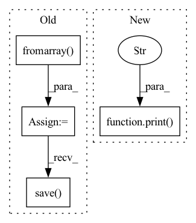

Pattern ID :6329
Before Change
processed_mask = process_mask(mask, batch_id*batch_size+j)
mask = Image.fromarray(mask)
processed_mask = Image.fromarray( processed_mask)
// print(np.histogram(processed_mask, bins=np.arange(256)))
mask_path = os.path.join(masks_dump_path, str(batch_id*batch_size+j).zfill(4) + "_mask" + format)
pmask_path = os.path.join(processed_masks_dump_path, str(batch_id*batch_size+j).zfill(4) + "_p_mask" + format)
mask.save(mask_path)
processed_mask.save( pmask_path)
// plt.imshow(mask)
// plt.show()
After Change
with torch.no_grad():
for batch_id, (img_batch, _) in enumerate(frames_loader):
print(f"Processing batch {batch_id + 1}." )
img_batch = img_batch.to(device) // shape: (N, 3, H, W)
result_batch = model(img_batch)["out"].to("cpu").numpy() // shape: (N, 21, H, W) (21 - PASCAL VOC classes)
for j, out_cpu in enumerate(result_batch):
// When for the pixel position (x, y) the biggest (un-normalized) probabilityIn pattern: SUPERPATTERN
Frequency: 3
Non-data size: 4
Instances Fragment ID: 22106363
Project Name: gordicaleksa/pytorch-naive-video-neural-style-transfer
Commit Name: 800d1f102a6821c05550ab79f012562d150d96d1
Time: 2020-08-02
Author: gordicaleksa@gmail.com
File Name: segmentation.py
M Class Name: AnonimousClass
N Class Name: AnonimousClass
M Method Name: extract_masks_from_frames(6)
N Method Name: extract_masks_from_frames(6)
M Parent Class:
N Parent Class:
M File Name: segmentation.py
N File Name: segmentation.py
M Start Line: 81
M End Line: 115
N Start Line: 56
N End Line: 86
Before Change
total_psnr += 10. * torch.log10(1. / torch.mean((sr_y_tensor - hr_y_tensor) ** 2))
sr_image = imgproc.tensor2image(sr_tensor, range_norm=False, half=True)
sr_image = Image.fromarray( sr_image)
sr_image.save( sr_image_path)
print(f"PSNR: {total_psnr / total_files:.2f} dB.\n")
After Change
total_psnr += 10. * torch.log10(1. / torch.mean((sr_y_tensor - hr_y_tensor) ** 2))
print(f"PSNR: {total_psnr / total_files:4.2f}dB.\n" )
if __name__ == "__main__":
main() Fragment ID: 22106365
Project Name: lornatang/srgan-pytorch
Commit Name: 231bd74d21d7f532fd746f4a1cb8fb3bc008c933
Time: 2022-03-03
Author: liuchangyu1111@gmail.com
File Name: validate.py
M Class Name: AnonimousClass
N Class Name: AnonimousClass
M Method Name: main(0)
N Method Name: main(0)
M Parent Class:
N Parent Class:
M File Name: validate.py
N File Name: validate.py
M Start Line: 28
M End Line: 82
N Start Line: 33
N End Line: 91
Before Change
total_psnr += 10. * torch.log10(1. / torch.mean((sr_y_tensor - hr_y_tensor) ** 2))
sr_image = imgproc.tensor2image(sr_tensor, range_norm=False, half=True)
sr_image = Image.fromarray( sr_image)
sr_image.save( sr_image_path)
print(f"PSNR: {total_psnr / total_files:.2f} dB.\n")
After Change
def main() -> None:
// Initialize the super-resolution model
model = Generator().to(config.device)
print("Build ESRGAN model successfully." )
// Load the super-resolution model weights
checkpoint = torch.load(config.model_path, map_location=lambda storage, loc: storage)
model.load_state_dict(checkpoint["state_dict"]) Fragment ID: 22106364
Project Name: lornatang/esrgan-pytorch
Commit Name: 087e0c9bc621989889918b52b7c0dba9485c5fd6
Time: 2022-03-06
Author: liuchangyu1111@gmail.com
File Name: validate.py
M Class Name: AnonimousClass
N Class Name: AnonimousClass
M Method Name: main(0)
N Method Name: main(0)
M Parent Class:
N Parent Class:
M File Name: validate.py
N File Name: validate.py
M Start Line: 28
M End Line: 82
N Start Line: 30
N End Line: 91